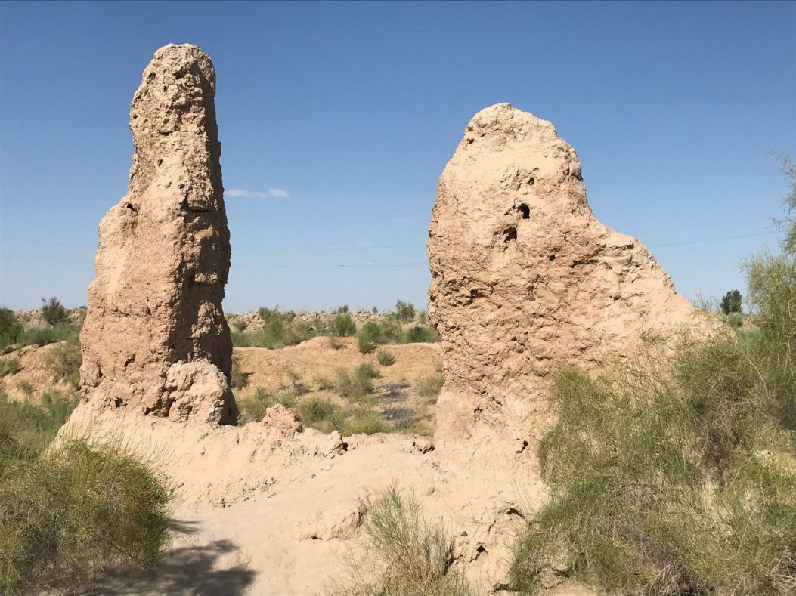
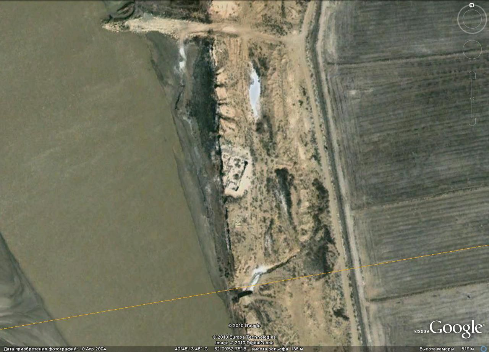

"SARTAROSH KARVONSAROYI"
1. Me’moriy inshootning nomi:
"SARTAROSH KARVONSAROYI"
2. Me’moriy inshoot tiklangan yil:
IX-XII asrlarga oid.
3. Me’moriy inshoot joylashgan manzil:
Dul-dul sakragan” degan joydan 45 km yuqorida, Amudaryoning o‘ng sohilidagi tik jarlikda joylashgan
4. Me’moriy inshootning qurilish materiallari:
Xom g‘isht, paxsa - guvala, qum, yog‘och
5. Inshootning bosh fasadi h.k.lar:


6. Me’moriy inshootning o‘lchamlari
yodgorlik 32x32m hajmda bo‘lib, kvadrat shaklga ega
7. Me’moriy inshoot to‘g‘risida tarixiy ma’lumot:
Dul-dul sakragan” degan joydan 45 km yuqorida, Amudaryoning o‘ng sohilidagi tik jarlikda joylashgan. Yodgorlikning katta qismi Amudaryo suvlari ta’sirida yuvilib ketgan. Olib borilgan arxeologik tadqiqotlar uning rejasini va me’moriy jihatlarini aniqlashga imkon beradi. Bu yodgorlik 32x32m hajmda bo‘lib, kvadrat shaklga ega. Karvonsaroyga kirish janub tomondan bo‘lgan. Inshoot burchaklarida 5 m ga turtib chiqqan rizalitlar (do‘nglik) mavjud. Shimoliy devorda keng 7 m lik kontrfors (tirgovuch) joylashgan. Boshqa devorlarda esa kontrforslar kuzatilmaydi. Yodgorlik devorlari-ning qalinligi 1,8 m. Devorlar 80x50x50 sm li paxsa bloklardan tashkil topgan. Qazishmalar natijasida karvonsaroydagi xonalar asosan, sharqiy, shimoliy va g‘arbiy devor bo‘ylab joylashganligi ma’lum bo‘lgan. Xonalar xo‘jalik xonasi, mehmonxona va omborxonalardan tashkil topgan. Karvonsaroyning markazi hovlidan iborat..
8. Me’moriy inshootning texnik holati:
Yer ustki qism 100% devor konstruksiyalari ekologik va texnogen ta’sirlar natijasida yo‘qolib ketgan
BOSH SAHIFAGA QAYTISH